НАН України · Київ
Досліджуємо всесвітню історію і зв’язки України зі світом
Державна установа «Інститут всесвітньої історії НАН України» проводить і координує фундаментальні та прикладні дослідження всесвітньо-історичного процесу, культурно-цивілізаційного розвитку та міжнародних відносин.
- початок історії установи
- 1992
- наукових відділів
- 5
- рік заснування журналу
- 2015
Історія і місія
Про інститут
Державну установу «Інститут всесвітньої історії НАН України» створено Постановою Президії НАН України від 21 вересня 2011 року № 266 на базі Інституту європейських досліджень НАН України.
Установа проводить фундаментальні та прикладні дослідження динаміки всесвітньо-історичного процесу, вивчає історичні зв’язки України з країнами і народами світу та готує на цій основі рекомендації для органів державної влади щодо стратегії інтеграції України у світове співтовариство.
Інститут співпрацює з органами державної влади, міністерствами і відомствами: готує аналітичні та прогностичні матеріали з проблематики міжнародних відносин і взаємин України з країнами світу.
Віхи
Постановою Президії АН України від 7 жовтня 1992 року № 268 створено Інститут східноєвропейських досліджень.
Перейменовано на Інститут європейських досліджень НАН України.
Створено Державну установу «Інститут всесвітньої історії НАН України».
Створено наукову бібліотеку Інституту.
Започатковано науковий журнал «Проблеми всесвітньої історії».
Керівництво
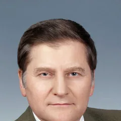
Андрій Іванович Кудряченко
Директор Інституту. Доктор історичних наук, професор, заслужений діяч науки і техніки України
Вікторія Віталіївна Солошенко
Заступник директора з наукової роботи. Кандидат історичних наук, доцент
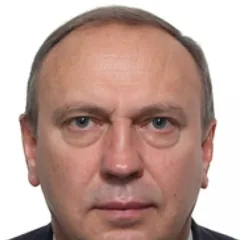
Олександр Федорович Деменко
Учений секретар. Кандидат політичних наук, доцент
Завдання всесвітньої історії як науки якраз і полягає в тому, щоб пізнати цей взаємозв’язок, показати перебіг розвитку великих подій, які зв’язують всі народи і керують ними.
Структура
Наукові відділи
Дослідження ведуть наукові відділи за тематичним планом Інституту. Окремий підрозділ Інституту: наукова бібліотека.
Відділ теорії та методології всесвітньої історії
Досліджує загальну теорію та методологію історичної науки, всесвітньо-історичний процес, історичну пам’ять і міжнародну безпеку. З 2024 року виконує тему «Європейський науковий дискурс Голокосту: сучасні виміри та перспективи досліджень».
Відділ історії нових незалежних держав
Вивчає історію держав Центральної та Східної Європи і пострадянського простору, трансформації їхніх політичних систем та становлення зовнішньополітичних курсів.
Відділ глобальних і цивілізаційних процесів
Досліджує світовий культурно-цивілізаційний розвиток, міжнародні політичні та соціально-економічні процеси. Відділ започаткував українську наукову школу глобалістики.
Відділ історії країн Азії та Африки
Досліджує історичний і культурно-цивілізаційний розвиток країн Азії та Африки, зокрема країн Глобального Півдня, їхню зовнішню політику та взаємини з Україною.
Відділ трансатлантичних досліджень
Вивчає історію та міжнародні відносини країн Європи й Америки, зовнішню політику євроатлантичного регіону, міжнародну безпеку та врегулювання конфліктів.
Наукова бібліотека
У книгосховищі зберігається старий фонд (8000 книжок), близько 7000 примірників періодичних видань і понад 300 дисертацій. Серед цінних видань «Енциклопедія Брокгауза і Ефрона» 1890 року у 86 томах.
Дослідження
Наукові напрями
Основні напрями наукових досліджень Інституту. Відділи працюють над ними за спільним тематичним планом.
Теоретичні проблеми всесвітньо-історичного процесу
Загальна теорія та методологія історичної науки, філософія історії.
Історія країн світу. Історія міжнародних відносин
Історія різних країн у контексті всесвітньої історії, становлення сучасної системи міжнародних відносин.
Світовий культурно-цивілізаційний розвиток
Цивілізаційні зрушення та конкуруючі версії прогресу сучасності.
Суспільно-політичні та культурні взаємини України з країнами світу
Аналіз і прогнозування розвитку цих взаємин.
Теми досліджень відділів
- 2024–2026
Європейський науковий дискурс Голокосту: сучасні виміри та перспективи досліджень
Відділ теорії та методології всесвітньої історії - 2023–2025
Зовнішня політика азійських країн в умовах формування нового світового порядку у першій чверті ХХІ ст.
Відділ історії країн Азії та Африки - 2023–2024
Австралія і Океанія в контексті регіональних і глобальних викликів (перша чверть ХХІ століття)
Відділ глобальних і цивілізаційних процесів - 2022–2024
Історичні засади та виміри соціально-економічного поступу пострадянських країн
Відділ історії нових незалежних держав
Аналітичні матеріали
- Аналітичний огляд за підсумками 60-ї Мюнхенської конференції з безпеки (MSC-2024)
- Давос-2024: напрямки та перебіг дискусій на щорічній сесії Всесвітнього економічного форуму
- Криза сучасної системи європейської безпеки: витоки та наслідки. Аналітична доповідь, 2025
Публікації
Видання
Науковий журнал, монографії, збірки та аналітичні доповіді Інституту.
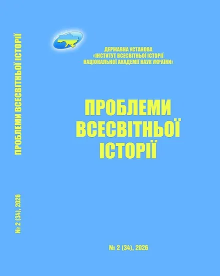
Науковий журнал
«Проблеми всесвітньої історії»
Видання публікує статті, рецензії на наукові роботи та хроніку наукового життя. Висвітлює фундаментальні та прикладні дослідження всесвітньо-історичного процесу і культурно-цивілізаційного розвитку. Редколегія дотримується політики відкритого доступу (Diamond Open Access), підготовка до друку і публікація статей безкоштовні.
- ISSN
- 2707-6776
- Рік заснування
- 2015
- Періодичність
- до 4 разів на рік
- Статус
- фахове видання, категорія Б
- Останній випуск
- № 2 (34), 2026
- DOI-префікс
- 10.46869
Журнал представлено в базах CEJSH, BASE, Scilit, Crossref, EuroPub, Google Scholar.
Попередні випуски
Нові видання
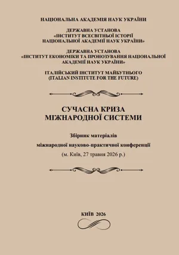
Сучасна криза міжнародної системиЗбірник матеріалів конференції, 2026, 387 с.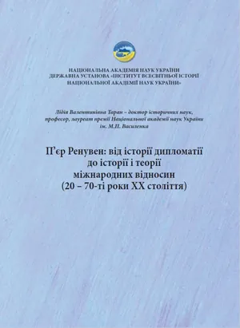
П’єр Ренувен: від історії дипломатії до історії і теорії міжнародних відносин2026, 60 с.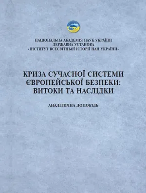
Криза сучасної системи європейської безпеки: витоки та наслідкиАналітична доповідь, 2025, 116 с.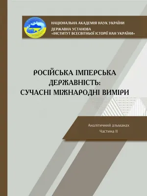
Російська імперська державність: сучасні міжнародні виміриАналітичний альманах, ч. II, 2025, 308 с.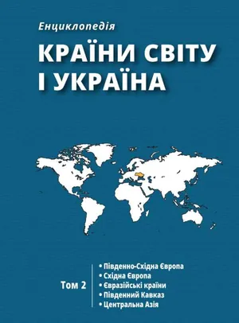
Країни світу і Україна: енциклопедія в 5 томахТом 2, 2025, 624 с.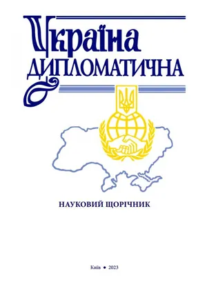
«Україна дипломатична»Науковий щорічник, випуск 2023 року
Підготовка наукових кадрів
Аспірантура
Інститут готує здобувачів третього (освітньо-наукового) рівня вищої освіти за освітньо-науковою програмою «Історія», спеціальність 032 «Історія та археологія».
Прийом 2026
У 2026 році Інститут оголошує прийом до аспірантури. Правила прийому опубліковано окремим документом.
- Понеділок–четвер
- 10:30–15:30
- П’ятниця
- 10:30–14:00
Години прийому документів
Програма і акредитація
Освітньо-наукова програма «Історія», спеціальність 032. Ліцензія МОН на освітню діяльність № 816 від 8 липня 2016 року. Рішення НАЗЯВО про акредитацію програми № 1314/АС-21 від 30 вересня 2021 року.
Документи та матеріалиПартнери з освіти
Договори про співпрацю з історичними факультетами Київського національного університету імені Тараса Шевченка та Національного педагогічного університету імені М. П. Драгоманова.
Усі договориЗахист дисертацій
Для захисту дисертацій доктора філософії діють разові спеціалізовані вчені ради. Матеріали про захисти опубліковано в розділі «Спецрада».
Розділ «Спецрада»Контактна особа з питань аспірантури: Людмила Вікторівна Кравчук
Телефони: (044) 235-52-56, (097) 409-14-00 з понеділка по п’ятницю, з 10:00 до 17:00
Конференції та круглі столи
Наукові заходи
Міжнародна наукова конференція «Європейський досвід реалізації політики пам’яті про Голокост»
- , онлайн (заочна участь)
- Мови: українська, англійська. Організаційний внесок не сплачується
- За результатами планується збірник наукових статей, публікація безкоштовна
Напрями роботи
- Феномен Голокосту та його місце у всесвітній історії.
- Проблеми та специфіка (не)дослідження Голокосту в СРСР і пострадянських державах.
- Особливості формування сучасного наукового дискурсу Голокосту в західноєвропейських країнах.
- Політика пам’яті про Голокост та актуальні проблеми дослідження в Україні та світі.
Важливі дати
- Заявки на участь
- Конференція
- Тексти статей до збірника
Нещодавні заходи
-
29вер 2026
Всеукраїнська наукова конференція «Міжнародно-політичні та соціокультурні умови розширення Співдружності націй 1960–1995 рр.»
Онлайн, заочна участь. Мови: українська, англійська
-
16чер 2026
Міжнародний круглий стіл «Україна і світ Центральної Азії. Культурно-історичний контекст і забуті імена: Ігор Савицький»
Змішаний формат. Співорганізатор: Посольство Республіки Узбекистан в Україні
-
4чер 2026
Міжнародна наукова конференція «Становлення та розвиток зовнішньої політики України в контексті трансформації міжнародних відносин 1991–2026 рр.»
Онлайн, заочна участь. Мови: українська, англійська
-
27тра 2026
Міжнародна науково-практична конференція «Сучасна криза міжнародної системи»
Онлайн, 10:00 за київським часом. Співорганізатори: Італійський інститут майбутнього (Неаполь) та Інститут економіки та прогнозування НАН України
-
19тра 2026
IX Всеукраїнська конференція молодих учених «Актуальні проблеми історії, філософії та права у дослідженнях молодих учених»
Змішаний формат: в Інституті та в Zoom. Організатори: ради молодих учених п’яти установ НАН України
Новини інституту
Останні новини
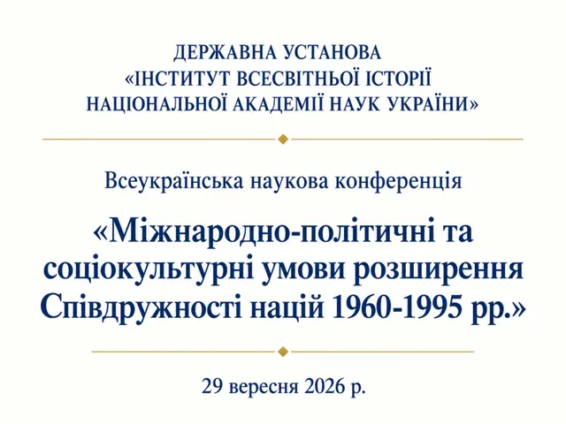
Всеукраїнська наукова конференція «Міжнародно-політичні та соціокультурні умови розширення Співдружності націй 1960–1995 рр.»
Конференція 29 вересня 2026 року, онлайн (заочна участь). Тексти статей приймають до 1 листопада 2026 року.
У 2026 році Інститут оголошує прийом до аспірантури
Прийом документів: понеділок–четвер з 10:30 до 15:30, п’ятниця з 10:30 до 14:00.
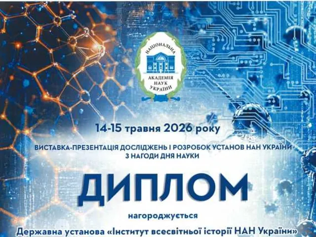
Диплом Виставки-презентації досліджень і розробок установ НАН України 14–15 травня 2026 року з нагоди Дня науки
У дипломі зазначено: за активну участь у виставці-презентації та сприяння розвитку науки.
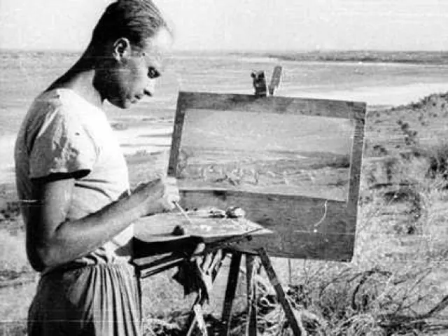
Прес-реліз: Міжнародний круглий стіл «Україна і світ Центральної Азії. Культурно-історичний контекст і забуті імена: Ігор Савицький»
16 червня 2026 року в Інституті відбувся круглий стіл у змішаному форматі за участі науковців, експертів і дипломатів України й Узбекистану.
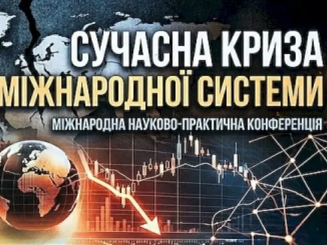
Прес-реліз Міжнародної науково-практичної конференції «Сучасна криза міжнародної системи»
27 травня 2026 року конференція відбулась онлайн за участю українських та іноземних науковців, аналітиків і дипломатів.
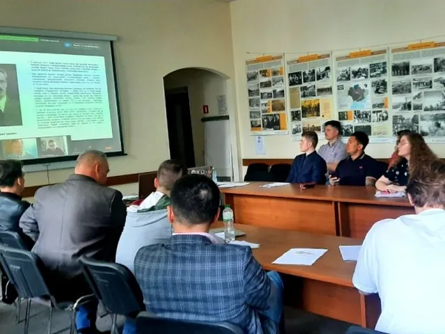
IX Всеукраїнська конференція «Актуальні проблеми історії, філософії та права у дослідженнях молодих учених»: прес-реліз
19 травня 2026 року: очно в залі засідань Вченої ради Інституту та онлайн у Zoom.
Співпраця
Партнери та співпраця
Інститут співпрацює з академічними установами, університетами та бібліотеками в Україні й за кордоном.
Угоди про співпрацю
- Центр «Фукідід», Університет Париж II Пантеон-АссасФранція
- Інститут історії та етнології імені Ч. Ч. ВаліхановаРеспубліка Казахстан, меморандум про співробітництво
- Київський національний університет імені Тараса ШевченкаІсторичний факультет
- Національний педагогічний університет імені М. П. ДрагомановаІсторичний факультет
- КПІ імені Ігоря СікорськогоДоговір про партнерство та співробітництво
- Харківський національний педагогічний університет імені Г. С. СковородиСпівробітництво у сфері науки і освіти
- Київський міжнародний університетДоговір про проведення практики студентів, 3 квітня 2025 року
Наші партнери
- Національна академія наук України
- Інститут історії України НАН України
- Національна бібліотека України імені В. І. Вернадського
- Львівська національна наукова бібліотека України імені В. Стефаника
- Київський університет права НАН України
- Інститут досліджень науково-технічного потенціалу та історії науки імені Г. М. Доброва НАН України
- Інститут філософії імені Г. С. Сковороди НАН України
- Інститут європейської інтеграції та політичних наук Академії наук Молдови
Контакти
Як з нами зв’язатися
Адреса
01054, м. Київ,вул. Леонтовича, буд. 5
- Телефон: (044) 235-44-99
- E-mail: office.ivinanu@nas.gov.ua, ivinanu@gmail.com
Аспірантура
Людмила Вікторівна Кравчук
З понеділка по п’ятницю, з 10:00 до 17:00